Mara
AI-powered health & wellness platform
- What I did
- Product requirements, AI workflows, APIs, QA, analytics and system integrations.
- Outcome
- 38 private beta users. Completed Misk Launchpad Cohort 9.
AI Product & Systems
I turn user and business problems into requirements, system workflows, API integrations and shipped products.
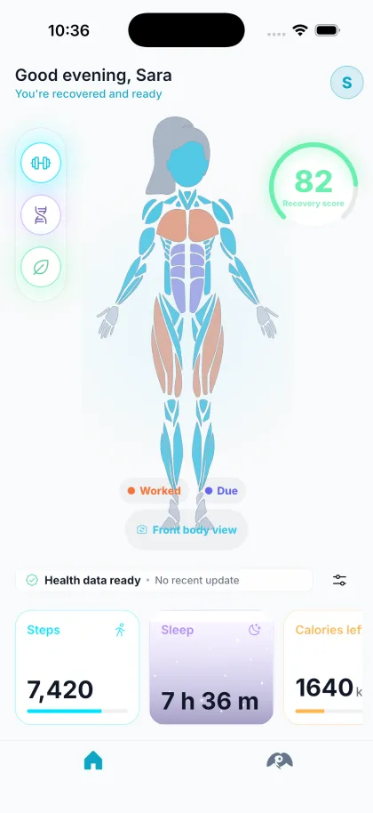
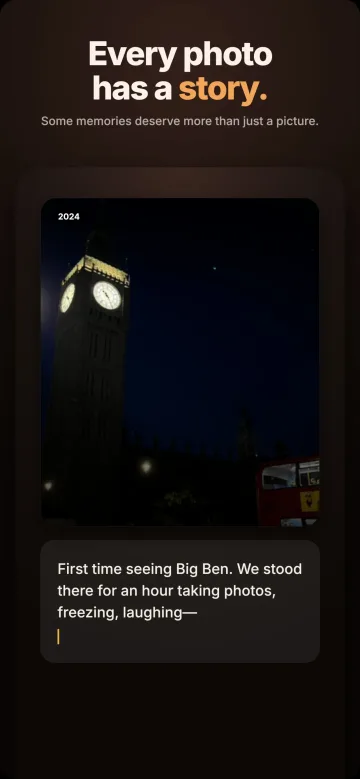
Computer Information Systems graduate focused on AI-powered products, technical product development and digital systems. I translate user and business problems into product requirements, system workflows, API integrations, prototypes and production releases.
I have built and shipped products across AI workflows, analytics, UX, monetization, QA and system integration.
AI-powered health & wellness platform
A 0-to-1, privacy-first iOS photo-memory app
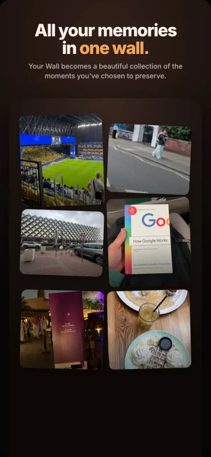
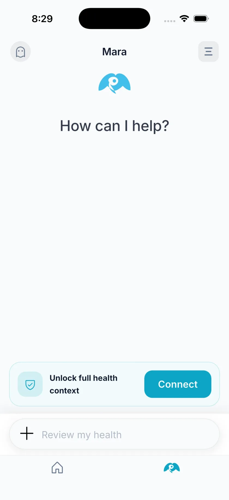
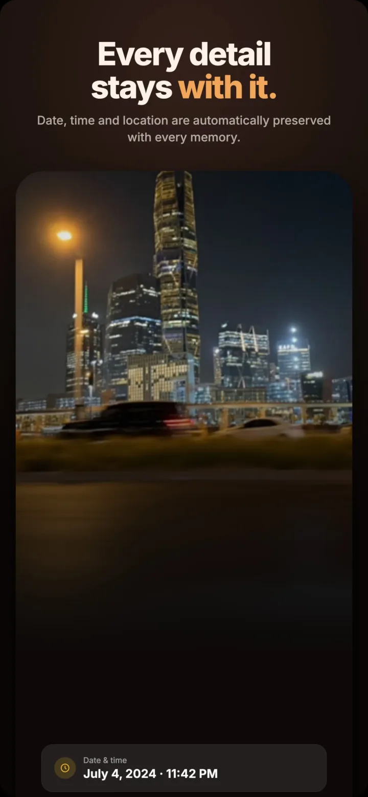
AI-powered Gulf travel platform
Integrates the OpenAI API with a local knowledge base for natural-language assistance, personalized trip planning and traveler safety. A King Saud University team project.
AI packing assistant for Saudi online stores
Built end to end in two days in Tuwaiq Academy’s AI product programme with Startupbootcamp and Meta. Gemini reads Arabic and English product pages, a 3D packing engine picks the cheapest safe carton, and every run is monitored in production.
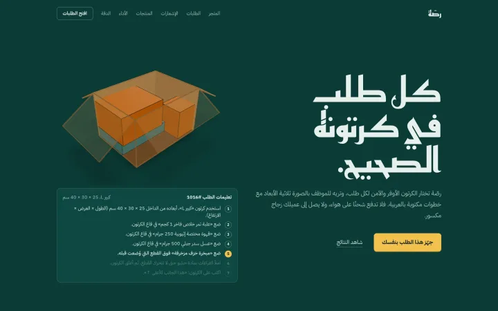
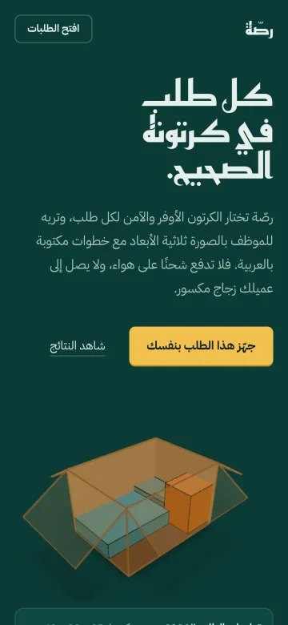
–
Air Connectivity Program
QA testing, system reviews, issue analysis and technical documentation. Analyzed operational data and IT processes, reviewed system requirements, and collaborated across governance, cybersecurity, networking and digital systems in an enterprise environment.
–
King Saud University
Scan, compress, convert, organise and sign files on device, in Arabic and English. On the App Store and Mac App Store.
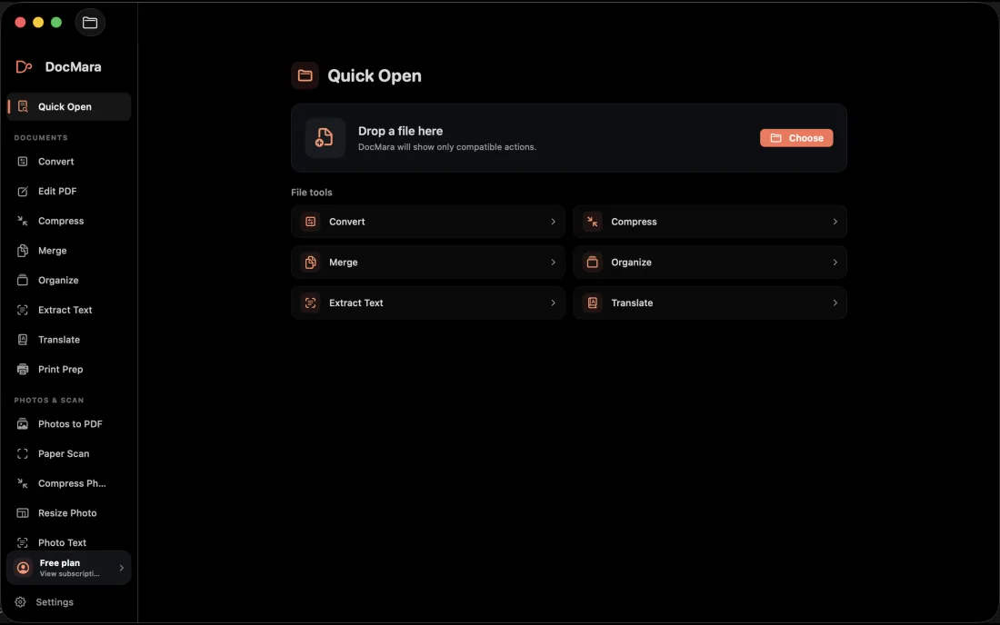
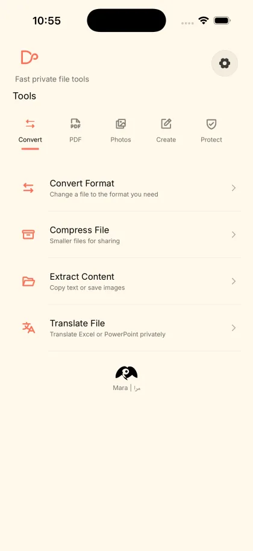
Live timing, standings, driver comparisons, track maps and seasons from 2023 to 2026. Free and open source.
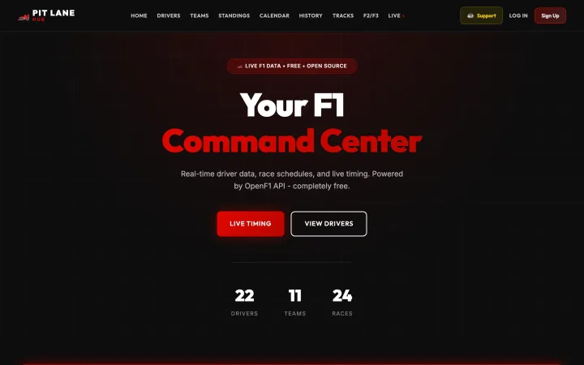
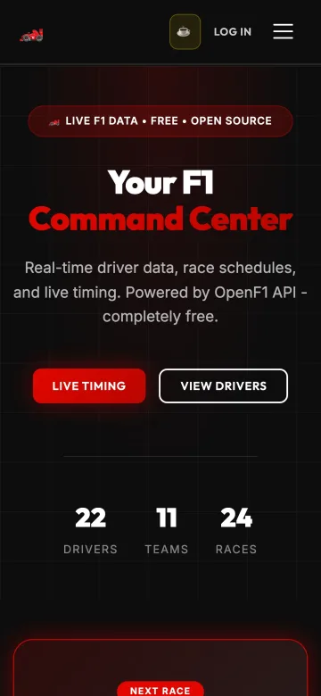
Rules, skills and a delivery gate for Claude Code that make the agent prove its work before anything ships.
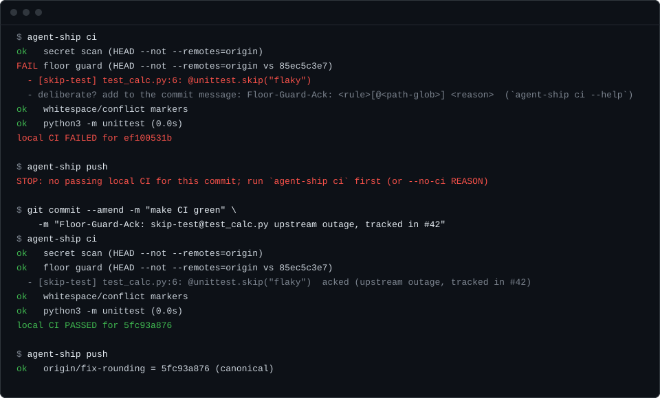
A morning briefing, replies drafted in your tone and rules that act on their own, for Gmail and Outlook in more than 30 languages.
Scans dependency files for abandoned and unmaintained open-source packages before they break a production build.
Tags and virtual albums built on hand-written data structures, for the CSC 212 Data Structures course.
Open to AI product, technical product and systems roles.
abdulazizalkhlaiwe@gmail.com